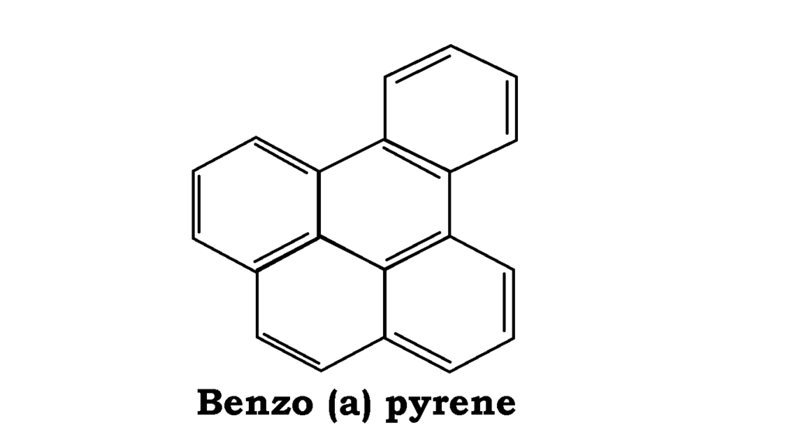

Greyfurt ile İlaç Tüketilir mi?
Bu yazımız herhangi bir tıbbi öneri veya tedavi şekli önermemektedir. Genel kültür kapsamında verilecek olan bu bilgiler yapılan çalışmalar ve sağlık haberlerinden derlenmiştir. İyi okumalar.
Hepinize merhaba arkadaşlar. Geçen kış mevsiminde ki artık bahar ayına giriyoruz, C vitamini, potasyum ve magnezyum kaynağı greyfurtu buldukça yedik buldukça suyunu içtik. Ancak uzmanların dikkatli olmamızı istediği bir konu var. Bazı ilaçları alırken greyfurt tüketmememiz isteniyor. Bunun nedeni ise greyfurtun bileşiminde yer alan bir takım maddeler, ilaçların parçalanmasını sağlayan sitrokom p450 (CYP 450) enziminin gücünü yok etmesinden kaynaklanıyor. Hadi konuya biraz daha detaylıca bakalım.
Greyfurt Nedir?
Sedefotugiller (Rutaceae) familyasına ait olan greyfurt (Citrus paradisi) yurdumuzda Akdeniz ve Ege bölgelerinde yetiştirilmeye başlanmıştır. Meyve kabuğunun içerisindeki yediğimiz etli kısım kırmızı olabileceği gibi açık portakal rengine de sahip olabilmektedir. Ağaçta yetişir. Böceklerle tozlanmaktadır. Kısacası yurdumuzda sıcak bölgelerde yetiştirilen bu bitkinin meyvelerinin hasadına sonbaharın orta aylarında başlanır ve kış mevsiminde sofralarımızı süslemektedir.
Sitrokom p450 nedir?
Aslında buradaki tek bir enzim değildir. Enzim grubudur. Sitrokom p450 enzimleri desek yanlış olmaz. Çünkü vücuttaki 3000 enzimi tek bir grupta düşünmeliyiz. Benzo(a)piren kömür ateşinde oldukça ve çokça kızarmış et ve sigara dumanında bulunan kanserojen bir maddedir. Aslına bakarsanız her organik maddenin sıcaklık ile kızarmasıyla bu ürün ortaya çıkmaktadır. Tavuk etinde de çıkar bu ürün. Tabi ki önemli olan nasıl pişirildiğidir. Sigara konusunu konuşmak istemiyorum çünkü sağlığa tamamen zararlı ve iyi içim kötü içim olmaz. Geçelim bunları.

İşte bahsettiğimiz gruba ait enzimler bu zararlı bileşikleri karaciğerde parçalayarak zararsız hale getirme özelliğine sahiptir. Aynı zamanda ilaçlardaki etken maddeleri belirli bir süre sonra parçalayacak olan enzimleri içerir bu grup. Konuşulacak çok şey vardır bu enzim ile ilgili. Çünkü farmakoloji alanında baya popüler bir enzim grubudur. Ancak biz konuya sade ve anlaşılır bir şekilde devam etmeyi tercih ediyoruz.
Greyfurt Suyu ve İlaçlar
Greyfurt suyunun içilmesinin ardından terfenadin metabolizması inhibe olur. Bu nedenle görülen ölümler mevcuttur. Greyfurt içerisinde furanokumarin adlı bir madde bulunur. Bu organik bileşik sınıfı sitrokom p3A4 enzimini inhibe ettiği düşünülüyor. İşte sitrokinin p3a4 enziminin parçalayacağı ilaç bu enzim inhibe olduğu için ilaçın parçalanacağı kısmı da kana karışıyor ve fazla ilaç alınımından dolayı sorunlar ortaya çıkıyor.
Furanokumarin sadece CYP3A4 inhibe etmiyor, 1A2 ve 2A6‘yı da inhibe ediyor. Furanokumarinler doğrusal/linear (Psoralen) furanokumarinler ve açısal/angular (Anjelisin) furanokumarinler olarak ikiye ayrılıyor. Bu isimlendirme ise furan halkasının kumarine bağlanma konumuna göre değişiyor.
Peki Uzmanlar Ne Diyor?
Dr. David Bailey ise greyfurt ile alınmaması gereken ilaçların sayısının 85’e ulaştığını belirtmiş. Dr. David bir bardak greyfurt suyu ile ilaç kullanmak aynı ilacı aynı anda 5-10 defa kullanmak yani bir bardak su ile 5-10 hap kullanmak ile eşdeğer olduğunu söylemiş. Neal Patel ise bu durumun sadece greyfurt ile sınırlı kalmadığını sütünde bazı antibiyotiklerin çözülmesini durdurduğunu belirtmiş.
CYP3A4 enzimi ile alakalı greyfurt suyu ile ilgili birçok ilaç bulunuyor. Kalsiyum kanal blokörleri, anksiyolitikler, antibiyotikler, neropsikiyatrikler bunlardan bir kaçı.
Sadece Greyfurt ile mi Sınırlı?
Bu durum sadece greyfurt ile sınırlı değil tabi ki. Örneği kafein teofilin etkileşiminde ilaçın toksisite riski ve yan etkileri artabiliyor. Akarboz inek sütü etkileşiminde biyo yararlanım azalıyor. Bunun gibi birçok örnek ilgili kaynaklarda mevcuttur. Tabi ki ilaç kullanmadan önce doktora gideceğiz, yazdığı reçeteye ve önerilerine göre ilaç kullanacağız. Aramızda internetten okuduğu bilgilere göre kafasına göre ilaç alıp kullanacak kişiler yoktur eminim. Yazıyı buraya kadar okuduğunuz için teşekkür ederiz, iyi günler arkadaşlar.
Kaynakça
megep.meb.gov.tr
http://www.torlakon.com/haberdetay.asp?ID=388
https://www.journalagent.com/kpd/pdfs/KPD_4_50_5_16.pdf
http://dergi.fabad.org.tr/pdf/volum12/Issue4/1.pdf
http://www.dicle.edu.tr/Contents/cabc8c35-cf2f-4195-9426-b98f0a5c93c7.pdf
http://bilheal.bilkent.edu.tr/aykonu/greyfurt.htm